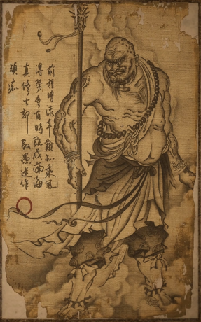

黑风大王

前程暗漆本难知，乘风得势各有时。
既成南海修真士，却教愚迷作顽痴。
| 名称 | 黑风大王 |
| 称号 | 观音座下守山大神 |
| 地点 | 黑风山 |
| 特征 | 通晓起死回生之术，善于谋略 |
概述
黑风大王是一位修为高深的妖王，曾在南海修行多年。归来后重振黑风山势力，善于谋略，不仅靠武力，更懂得笼络人心。他精通起死回生之术，曾多次尝试复活故人，却每每事与愿违。
背景
黑风大王从南海归来后，为重振威望做了诸多举措。他用起死回生真言救活老友凌虚子，扶持苍狼精为新任狼王，甚至尝试复活昔日论禅的老和尚。然而这些举措都未能如愿，反而引发了一系列意外。他手下还有个白衣秀士，虽看似老实，却心思难测。
台词
初见
五百年了，我重建了观音禅院，规模比之前的更大。
那些葬身火海的僧众，化为孤魂野鬼，在这黑风山间游荡。
是我！亲手将他们超度。
我甚至把那些经书残卷，一一复原。
但我知道总有一天，你还是会找上门来！
广智变身
广智！命你为师父守钟，你怎败了！
学人玩火，难不成你想再烧一回禅院！
战斗
黑风之名，岂是浪得！
难道你不想长生吗？
不通遁迹之法，也敢击吾仙洞！
你们这些猴子，来了就是烧杀掳掠，比我又高到哪里去了？
吾乃观音座下守山大神，休得放肆！
死亡
天命人，不过如此。
你是哪寺里和尚，敢来我这里索取？
击败
有点本事。
有种跟我来山顶会会！
原著记载
《西游记》中黑风大王出现在三个章回：
- 第十六回：观音院僧谋宝贝 黑风山怪窃袈裟
- 第十七回：孙行者大闹黑风山 观世音收服熊罴怪
- 第二十六回：孙悟空三岛求方 观世音甘泉活树
只见那怪果生得凶险：碗子铁盔火漆光，乌金铠甲亮辉煌。皂罗袍罩风兜袖，黑绿丝绦軃穗长。手执黑缨枪一杆，足踏乌皮靴一双。眼幌金睛如掣电，正是山中黑风王。
成就
- 【禅院逢友第九难】长老终于等到了黑风山土地老爷。
- 【余韵远传第八难】三钟响，幽魂藏。
基本信息
| 名称 | 黑风大王 |
| 称号 | 观音座下守山大神 |
| 地点 | 黑风山 |
| 特征 | 通晓起死回生之术，善于谋略 |
| 相关人物 | 凌虚子、苍狼精、白衣秀士 |